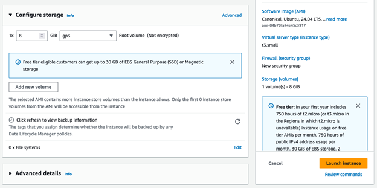

Create and Deploy a Website to Firebase
Overview
AWS EC2 allows you to deploy servers and resources for computers in the cloud, like a Linux server.
Business Requirements
-
Deploy an Ubuntu Linux Server on AWS to host a website and/or database
Project Overview
-
Create an Ubuntu EC2 instance on AWS
-
Add in Docker with the nginx package to host a website
Table of Contents
- Part 1 - Setup an EC2 Instance
- Log into AWS Console
- Launching an EC2 Instance - The Manual Way
- Connecting to the Server
- Run Security Updates
- Install Something (nmap port scanning)
- Basic Linux Commands
- Part 2 - Docker and Nginx
- Install Docker
- Install NGINX web server on Docker
- Part 3 - Terraform
- Setting Up an EC2 Instance - Using Automation
- AWS Cloudshell (Amazon's terminal/shell) to use Terraform to deploy systems/servers
- AWS Terraform
- Terraform Script File
- Initiate Terraform Script File
- Deleting Resources With Terraform Script File
- Learning More
Part 1 - Setup an EC2 Instance
Log into AWS Console
-
Log into your AWS Console through your learner lab
Launching an EC2 Instance - The Manual Way
-
When in your AWS console, search EC2 in the search bar and click EC2

-
Click Launch Instance

-
Pick a name for the server like Ubuntu

-
Click on Ubuntu

-
Pick how much processing power and RAM you want. We will stick with the default t2.micro

If you are going to use a GUI (we are not), you will want ot do at least a t3.small instance. This server doesn't have a GUI though. It is only accessible from a terminal.
-
Click Create New Key Pair. This is the security key you need to connect to the server. It is like a password file.

-
Name the key and keep the settings at their default (RSA key pair type, and .pem key file format).

Click Create Key Pair and this will download it to your computer. Make sure to save this in a place where you will remember where it is.
-
Select the ports that you want open to be able to access the server. (e.g port 22 (selected by default) to ssh into the server)

-
Pick how much hard drive space you need on the server
Click Launch Instance
Connecting to the Server
-
Click Connect to Instance

-
Click Connect.

-
Alternatively, you could use Powershell or terminal to ssh in with the key you downloaded earlier. You would need to find the public IP of your EC2 instance in the details page under instances in the EC2 dashboard and run the following command (replace 3.3.3.3 with your public IPV4 address):
ssh -i yourkey.pem ubuntu@3.3.3.3
-
Run Security Updates
-
Make sure to update the instance often
This gets the updates for the server:
sudo apt-get update
This applies the updates for the software and services that need updates
sudo apt-get upgrade
This reboots/restarts the server (Only need to do this on kernel or Major OS updates)
sudo reboot
-
Linux Kernel Upgrades (take a snapshot and test on a copy first - dev server if possible):
This applies Linux minor kernel updates to the operating system. (This update takes some time to do, so only run this if you have time)
sudo apt-get dist-upgrade
sudo reboot
-
Major OS upgrades (take a snapshot and test on a copy first - dev server if possible):
Check the LTS version and see when the endo fo life is for that version of Ubuntu. You might have to do a major upgrade:
This does a major update from something like Ubuntu 22 to Ubuntu 24 (Only run this if you need to):
sudo do-release-upgrade
sudo reboot
Install Something (nmap port scanning)
-
This installs softwar/applications/services on the system (fill in the blank with what you want to install):
sudo apt-get install ______
This installs nmap, a tool to scan servers to see what ports are open on a system
sudo apt-get install nmap
This scans the local server you are running it from to see what ports are open
nmap localhost
Basic Linux Commands
-
This displays what folder you are currently in
pwd
This displays what files and folder are in your current directory
ls
Displays what user you are logged in as
whoami
Move Up a Folder
cd ..
Move to another folder or directory
cd foldername
Part 2 - Docker and Nginx
Make sure you are connected to your EC2 instance running Linux to install Docker (container virtualization for applications) and install NGINX (web hosting server system)
Install Docker
-
Docker allows you to containerize applications, systems, or websites. They can also be used to scale applications.
These are the instructions to install Docker (get updates, Add Docker's official GPG key, etc.):
sudo apt-get update sudo apt-get install ca-certificates curl sudo install -m 0755 -d /etc/apt/keyrings sudo curl -fsSL https://download.docker.com/linux/ubuntu/gpg -o /etc/apt/keyrings/docker.asc sudo chmod a+r /etc/apt/keyrings/docker.ascAdd the repository to Apt sources:
echo \ "deb [arch=$(dpkg --print-architecture) signed-by=/etc/apt/keyrings/docker.asc] https://download.docker.com/linux/ubuntu \ $(. /etc/os-release && echo "$VERSION_CODENAME") stable" | \sudo tee /etc/apt/sources.list.d/docker.list > /dev/nullInstall Docker on the system:
sudo apt-get update sudo apt-get install docker-ce docker-ce-cli containerd.io docker-buildx-plugin docker-compose-plugin sudo service docker startReferences from: Docker.com
Install NGINX web server on Docker
-
Downloads nginx docker to run it as a webserver via docker
sudo docker pull nginx:latest
Grabbing the crud.html file to deploy it on docker.
curl -O https://byui-cloud.github.io/itm101-course/week07/crud.html
-
(Use vim to edit this file if you want to change the config "const firebaseConfig" on line 22 of you want your database to work. You will also need to add the domain of your website to the authentication settings in Firebase).
-
Add the website to teh authorized domains in Firebase (Go to the project, go to Authentication > Settings > Authorized Domains)
-
Type the following in the Ubuntu instance to open the crud file in vim:
vim crud.html
-
Use the arrow keys to get to the "const firebaseConfig" part. Delete and replace lines 22-29 by hitting 'dd' on your keyboard to get rid of it line by line.
-
Copy the api key, etc. from your config.js file or the project settings area on Google Firebase.
-
Hit i on your keyboard be able to add lines to your crud.html file.
Right-click and paste in what you copied from your Google Firebase configuration file.
-
Hit ESC on your keyboard to get out of insert mode
-
Write :wq to write and quit the file
-
-
Run the following to allow the crud.html file to be utilized
chmod -R 755 /home/ubuntu/
-
Run this command to get the crud.html file uploaded to nginx in docker:
sudo docker run --name crud9 -p 80:80 --mount type=bind,source=/home/ubuntu,target=/usr/share/nginx/html,readonly -d nginx:latest
-
This command opens the http port on the EC2 instance:
sudo ufw allow 80/tcp
-
To list the current containers in Docker, use the following command:
sudo docker ps
-
Go to the EC2 instance and edit the inbound rules to open port 80 for TCP. Click on your EC2 instance in the AWS interface, scroll down to the security tab and click on the security group. Edit the inbound rules and add port 80 for Custom TCP
-
Run the following to see that port 80 is open. Notice that port 22 is also open (The port that allows us to connect to the server).
nmap localhost
-
Open your web browser and open the IP address of your new NGINX website (use http):
http://3.3.3.3/crud.html (Replace 3.3.3.3 with your public IP address of your instance)
Referenced From Installing Docker on Ubuntu 24.04
Part 3 - Terraform
Setting Up an EC2 Instance - Using Automation
Terraform scripts allow you to deploy everything from Part 1 in one file.
AWS Cloudshell (Amazon's terminal/shell) to use Terraform to deploy systems/servers
Now, let’s deploy the same thing but with automated scripts like Terraform outside of what we just installed
DO NOT USE THE UBUNTU terminal.
We are using AWS cloudshell. That is Linux too, but it is to deploy resources in your AWS.
-
AWS Cloudshell allows terminal/command prompt access to quickly run scripts for deployment.
To open Cloudshell, click on the Cloudshell icon at the top of the screen or at the bottom left of the screen.
A black window will appear as a terminal at the bottom of your screen. Paste your commands in that window.
AWS Terraform
-
Make sure you look at the region you are in at the top right. (ex: N. Virginia)
The Terraform script we will use ONLY WORKS IN N. Virginia
-
Install Terraform by opening the Cloudshell and run these one by one (they will not work all together)
DO THESE IN CLOUDSHELL! NOT IN UBUNTU LINUX!
Terraform allows you automatically deploy servers in AWS and other systems too. They are automated scripts. First you need to install Terraform with these three commands:
sudo yum install -y yum-utils
sudo yum-config-manager --add-repo https://rpm.releases.hashicorp.com/AmazonLinux/hashicorp.repo
sudo yum -y install terraform
Terraform Script File
-
In the same AWS Cloudshell terminal, get a terrafrom file we made
MAKE SURE YOU ARE IN THE N. Virginia REGION!
curl -O https://byui-cloud.github.io/itm101-course/week10/mainawslinuxeast.tf
Terraform has .tf files that have instructions on where to deploy the server, which settings, what firewall settings, how many resources, etc. We made this file above for you to deploy a basic Linux server.
Go look at the file: https://byui-cloud.github.io/itm101-course/week10/mainawslinuxeast.tf
Initiate Terraform Script File
-
Start the terraform.
terraform init
terraform plan
terraform apply -auto-approve
ls
terraform apply deploys the resources (it uses the .tf)
The .tf file that we provided generates a .pem file in your cloudshell terminal.
You can download it if you want on the Actions menu.
ls displays the files and folders in the current working directory. See the .pem file that was made.
Now go look at the ubuntu ec2 instance that was deployed. Remote into it with the key that was created in the same shell.
ssh -i ubuntu@3.3.3.3
Deleting Resources With Terraform Script File
-
Go back to your Cloudshell and run this to delete all the resources:
terraform destroy -auto-approve
Ending Session & Managing Budget
-
Make sure to stop your instances and End your Learner Lab to save on budget when you are done working on it for that day/class. If you terminate your instance, it will delete it.
Learning More
-
Install more things and do more with docker and terraform. You can install docker also on AWS Linux that was deployed from your CloudShell terraform script.
sudo yum install -y docker
(find a docker container to install: https://hub.docker.com/ ex: https://hub.docker.com/r/langchain/langchain)(ex: sudo docker pull langchain/langchain)
sudo docker pull _________
sudo systemctl enable docker
sudo service docker start
sudo docker run --name myllm -d --restart unless-stopped -p 80:3000 bkimminich/juice-shop